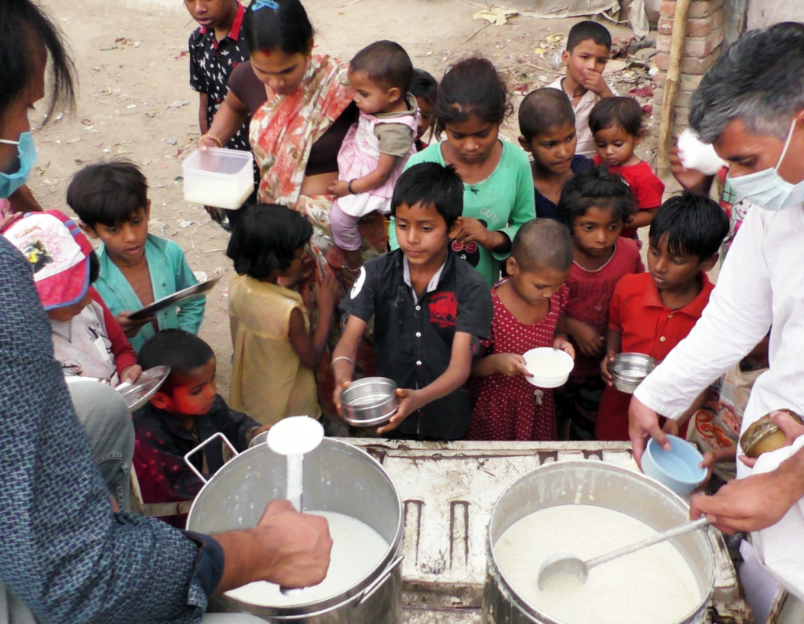

More Website Templates @ TemplateMonster.com - September22, 2014!
Our Vission

Humanity
Humanity refers to caring for and helping others whenever and wherever possible. It means helping others at times when they need that help the most.
God in The Person
The concept of "God in the person" refers to the belief that the divine spirit resides within each individual, regardless of their religion or beliefs. This idea emphasizes the inherent worth and dignity of every human being.

Salvation
Our mission is to provide a holistic approach to salvation. We believe that by providing resources, education, and support, we can help individuals and communities overcome challenges and achieve their full potential.

Show You Care
Showing you care can make a huge difference in someone's life, even with just a small gesture or kind word. It's important to take the time to show those around you that they are valued and appreciated.
-
1
Social ills and economic backwardness are the consequences of lack of education. Lack of women’s empowerment, caste-ism, alcohol and drug abuse, violence and intolerance as also incidents like rape are issues that plague a society which does not have access to universal education. -
2
After a disaster, people come together to help. To make the most of your contributions, it’s important to follow guidelines for donating and volunteering responsibly.After a disaster, people come together to help. -
3
There are many medical emergencies needed everyday at hospitals . Requirement are much more than we can expect. As there emergence need for blood when the any kind of accident happens. -
4
The prevalence of malnutrition worldwide is staggering. Globally, 2 billion people suffer from malnutrition in one form or another. ‘Food and Nutrition’ is another essential for health